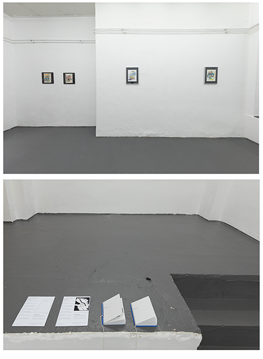

A Multi-level Crossing Diagram, 2018
Open Studio, 2018
Under The Circular, 2015
Copyright © 2018 Lim Cha
all rights reserved.
다중 교차형 도식, 갤러리 요한네, 프랑크푸르트 암 마인, 2018
A Multi-level Crossing Diagram, Gallery Johanne, Dürerstraße 10, Frankfurt am Main 2018
an installation view
Photo: Lim Cha

flyers and series of the drawing publication <A List of Shapes>, <A List of Shapes II>

a poster with a vector drawing